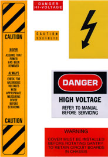
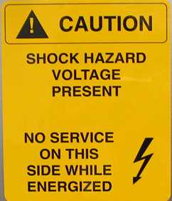
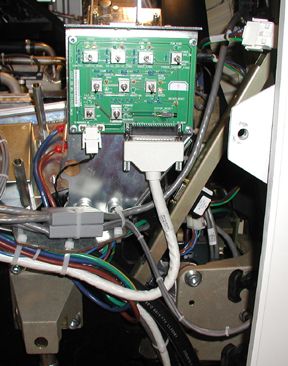
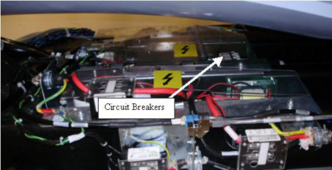
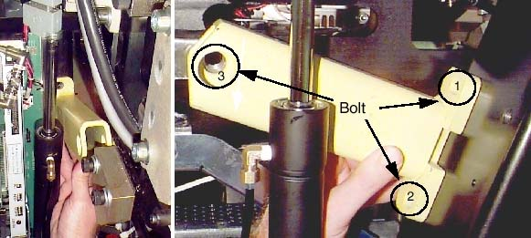

Operating Documentation
Direction 5193574-800, Rev# 22
LightSpeed 7.X Service Methods
Module Version 2.0, Version Date 10/24/08
Operating Documentation |
| Last Revised: | October 22, 2008 |
With the gantry’s primary covers removed, secondary covers are used to help prevent accidental contact with electrical contacts. The most electrically dangerous area in the CT gantry is the exposed slip ring platter. The system should be tagged and locked out whenever the gantry covers are removed.
When the gantry is rotating, the left and right sides of the gantry are where objects are most likely to be ejected, if not properly fastened. IT IS IMPORTANT THAT ALL HARDWARE BE PROPERLY FASTENED (TORQUED) TO ITS PROPER SPECIFICATION.
Take the following precautions when working on, near or around the gantry:
Never wear loose clothing or jewelry. Clothing might become entangled in the rotating assembly and jewelry can short to high voltages.
Avoid standing near the rotating assembly when it is operational, to avoid being struck by the assembly or ejected objects. Always torque fasteners to their proper specification.
Avoid standing or kneeling near the slip ring platter. High voltages exist on the exposed rings. Always disable power to the rings by using the service switches before performing service.
Never put any part of your body into the gantry, unless the gantry is locked. Axial drive power must be disabled. If working on the tilt assembly, the tilt locking bracket should be installed, except when replacing the Hydraulic Tilt Assembly (instructions for inhibiting movement of the gantry for the Hydraulic Tilt Assembly are located in that replacement procedure).
Wear and use personal protection equipment.
Tag and lockout power at the main disconnect.
Apply Ergonomic principles when necessary. Understand your physical limitations and get help when necessary.
Always use and follow procedures described in your service documentation, when servicing this equipment. For additional information on clearance issues, see the Regulatory Clearance Quick Reference Guide.
The design allows service personal to adequately install, complete PM inspections, replace broken components, complete adjustments with power on, and troubleshoot the system without accessing the gantry from the left (non-tube change service) side while energized. When replacing components and performing service tasks that require access to gantry left-side components, all system power will be locked out at the A1 breaker.
The primary gantry left-side serviced components include TGPU, TGPU power supply, gantry stationary fan controller, gantry stationary 48V power supply, x-ray tube pump assembly, axial encoder, gantry home flag board, gantry tilt pot assembly, all system cables, left-side gantry E-stop box, and the gantry balance sensor board. All these are to be serviced in a non-energized state.
When Service Engineers are performing “Power On” energized-service tasks, including troubleshooting and adjustments, all tasks will be done without accessing the gantry left (non-tube change service) side. The Service Engineers will use newly designed hardware, software / firmware tools, and service procedures to complete all tasks from the front, back, or right side of the gantry. In addition, even those rooms that have access greater than 36” of clearance on the gantry non-tube change side, all service will be completed non-energized as described in this document.
Service access and egress will be restricted for all sites with less than 28” of left-side clearances, measured from the side cover to the obstruction or wall. “No Energized Service” labels will be visible on the TGPU cover. Standing or performing service tasks on the gantry’s left side while the system is energized will be considered a regulatory violation.
More information regarding regulatory requirements and siting requirements can be found in the Pre-Installation Manual for your system.
All un-insulated electrical contacts, including the slipring, have secondary covers in place to protect service personnel from accidental contact. Removal of any secondary cover exposes service personnel to potentially deadly voltages (see Illustration 1).
All secondary covers must be in place before primary covers are installed and during routine service.
Illustration 1: CT Gantry Slip Ring Platter Covers

Un-insulated high voltage areas in the brush-block area include:
High voltage DC for X-ray generation. Only measurement equipment isolated from ground can be used to measure HVDC on this system. Use of grounded measurement equipment can result in serious personal injury and/or equipment damage.
120VAC for power supplies.
If a secondary cover can be removed and it potentially exposes a service person to an uninsulated electrical hazard, a warning label is applied to or near the secondary cover. In the gantry, voltage hazards in excess of 120VAC have been labeled. However, the 120VAC present in the gantry also is capable of causing electrocution. See Illustration 2 for some of the label types used in the gantry.
Illustration 2: Gantry Electrical Hazard Lables

Special warning labels for a limited-access hazard are visible when the left-side cover is removed. See Illustration 3.
Illustration 3: Limited Access Warning Label

LAMPS & LEDS
There are a number of lamps/LEDs on the Service Switch Panel that indicate the functional state of the gantry. See Table 1 for a functional description.
Table 1: Service Switch Panel LED Descriptions
| LED # | LABEL | COLOR | DESCRIPTION |
| DS1 | 120VAC ENABLE | Green | 120VAC Enabled |
| DS2 | 120VAC ON | Yellow | Contact for 120VAC in PDU is on |
| DS3 | AXIAL DRIVE ENABLE | Green | Axial Drive Enabled |
| DS4 | AXIAL DRIVE ON | Yellow | Contact for Axial Drive in PDU is ON. |
| DS5 | HVDC ENABLE | Green | HVDC Enabled |
| DS6 | HVDC ON | Yellow | Contact for HVDC in PDU is ON. |
| DS7 | FAN HIGH | Green | Indicates that FAN is controlled as Force FAN on. (Function not used). |
| DS8 | SERVICE MODE | Yellow | Indicates that current mode is service mode. |
| DS9 | NORMAL MODE | Green | Indicates that current mode is normal mode. |
| DS10 | CONTINUOUS ROTATION | Yellow | Indicates that the direction of Axial service test switch is Continuous rotation side. |
| DS11 | JOG ROTATION | Green | Indicates that the direction of Axial service test switch is Jog rotation side. |
| DS12 | HIGH SPEED | Yellow | Indicates that the direction of Axial speed switch is High Speed side. (Function not used). |
| DS13 | LOW SPEED | Yellow | Indicates that the direction of Axial speed switch is Low Speed side. (Function not used). |
| DS14 | TILT ENABLE SW STATUS | Green | Indicates that TILT ENABLE SW is ON at service mode. |
| DS15 | TILT FORWARD | Green | Indicates that TILT Direction SW is Forward side when TILT ENABLE SW is ON at service mode. |
| DS16 | TILT BACKWARD | Green | Indicates that TILT Direction SW is Backward side when TILT ENABLE SW is ON at service mode. |
| DS17 | DRIVES RESET | Yellow | When Gantry is in an emergency state, flashing ON and OFF. After Emergency state is reset, LED is turned solid ON. |
The descriptions in the above table apply when the associated LED is lit.
A number of features have been provided as means of disabling hazards at particular points in the gantry, for ease of service. This and the next few sections will describe these features.
The E-Stop and Service outlets are located on both sides of the gantry on the stationary frame. The E-Stop is identified as a large red push button. The Service outlets are standard duplex 120VAC outlets. These are provided for ease of using AC powered test equipment near the gantry without requiring extension cords.
Illustration 4: Gantry E-Stop and Service Outlets (Left Side of Gantry)

The service switches and circuit breakers described hereafter are not to be relied on as personal protection devices. They do not replace tag and lockout of main power to ensure personal safety. Switches and breakers are intended to only inhibit particular system functions and equipment operation. They do not eliminate or remove the electrical or mechanical hazards that exist. Because hardware can fail and defeat the functionality of these devices, only Lockout/Tagout ensures protection from unattended gantry rotation and electrocution. Be aware that not all power is removed on the gantry by use of these switches.
The Service switches are located on the right side of the gantry on the stationary base just above the rear cover cam latch. UP (enabled) is the normal operational position for these switches. The primary service safety switches are located across the top of the service switch panel.
Illustration 5: Service Switch Panel Location

Table 2: Service Safety Switches
| # | Name | Position | Description |
| S1 | Gantry 120VAC Enable | ENBL | Toggle switch enables Gantry 120VAC. |
| OFF | 120 VAC Disabled | ||
| S2 | Axial Drive Enable | ENBL | Toggle switch enables Axial Drive. |
| OFF | Axial Drive Disabled | ||
| S3 | HVDV Enable | ENBL | Toggle switch enables HVDC. |
| OFF | HVDC Disabled |
| NOTE: | When turning off gantry power using the service switch board, always ensure that 120VAC power is ON while the HVDC is Enabled |
The circuit breaker in the power pan, located at the gantry base, protects both the 120 / 208 VDC and tilt drives.
Illustration 6: Power Pan Circuit Breaker

The gantry’s internal E-Stop performs the same function as the E-Stops mounted to the console and the gantry covers. See Illustration 4.
Inside the Gantry are several hazards that can cause personal injury from:
moving assemblies (rotational and tilt)
assembly weights (tube and covers)
chemicals (slip ring brush dust and oils {Tube, HV Tank and Tilt Drive Hydraulic Oil})
heat sources (tube)
To prevent assembly and part separations from the rotating assembly, all fasteners must be torqued to their proper specification, using a calibrated torque wrench. The torque specification for a fastener is specified in its associated replacement procedure. For further information on torque, including a conversion factor chart, refer to Torque Wrench Information.
To prevent un-commanded or unintended motion of the rotating assembly, the rotational lock must be engaged anytime the rotating assembly is serviced.
Illustration 7: Rotational Lock Assembly

The rotational lock is located on the rear right side of the gantry, near the top. It is positioned directly across from the teeth in the rotational assembly. To operate the lock:
To Lock the gantry rotation, turn the handle clockwise until the teeth on the lock fully engage the teeth on the rotating assembly. If necessary, rock the rotating assembly slightly to align the teeth. Hand tighten until snug. Do not over-tighten. Visually verify that the teeth are engaged.
To unlock the gantry rotation, turn the handle counter-clockwise until the lock is fully retracted away from the gantry teeth and the handle can no longer be turned counter-clockwise.
| ||||
| Crush Hazard | ||||
| Use the appropriate procedure for hydraulic component replacement | ||||
| Do not use this procedure when replacing or servicing the Gantry Tilt Hydraulic Cylinders. The appropriate method for safely inhibiting gantry movement for that procedure is defined directly within the steps of the replacement procedure. |
| NOTE: | Spatial orientation defined in this section for is from the service perspective of an observer standing at the end of the patient table looking towards the Gantry Display board, through the gantry. This orientation defines a negative or minus gantry position which places the top of the gantry leaning away from the observer. Refer to System Safety Overview procedure section titled "Spatial Orientation While Servicing The System". |
Position the gantry at zero degrees. Start on one side.
While holding the bracket in place (see Illustration 8), secure the bracket to the stationary frame at locations 1 and 2. [Note: The two tilt brackets are identical.]
Next, secure the bracket to the pivoting frame at location 3.
Repeat these steps on the other side.
Illustration 8: Tilt Locking Bracket (Right and Left Sides)

When the brackets and associated hardware are not in use, store them in the top compartment of the PDU.
Whenever the x-ray tube is removed or installed, a tube hoist must be used. With the help of the tube hoist, one (1) person can change an x-ray tube.
| ||||
| Potential for injury to service personnel. | ||||
| Service task requires personal evaluation. | ||||
| Proceed with an evaluation of how best to approach this service task. Apply ergonomics principles where necessary. Understand your physical limits with regards to the task and seek additional help if required. |
The front and rear covers are designed to be safely removed by one (1) person, using the cover dollies supplied with your system. Because the weight of these covers could cause injury, these cover dollies must always be used. Both the installation manual and enclosure replacement procedures describe how to assemble and use cover dollies.